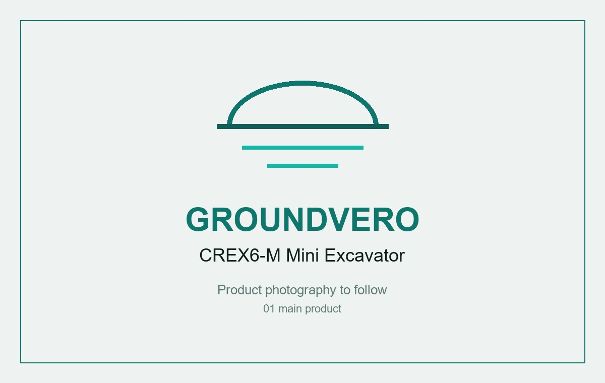

Blade fitted

CREX6-M Compact Excavator with Dozer Blade
A compact tracked excavator that digs, backfills and levels in one visit.
- 705 mm across its rubber tracks, for side gates and narrow paths
- Hydraulic dozer blade to backfill and level after digging
- Digging bucket with bolt-on teeth
£4,999